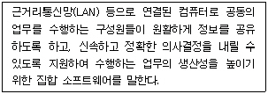
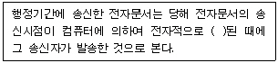
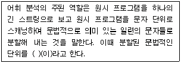

사무자동화산업기사 (2009-03-01 기출문제)
1과목: 사무자동화 시스템
1. 사무자동화 추진시 조직의 생산성을 향상시키기 위한 선결과제가 아닌 것은?
- 사무환경 정비
- 사무관리제도 개혁
- 조직 및 체제의 재정비
- 사무원 감소 및 문서량 감소
(정답률: 91%)

2. 전자우편시스템을 이용해서 사내 야유회 공고를 하고 싶을 때 전자우편시스템 기능 중 어느 것을 이용하는 것이 가장 좋은가?
- 반송
- 일시지정송신
- 동보지정
- 회부
(정답률: 89%)
3. 데이터베이스 관리 시스템(DBMS)은 응용프로그램들이 데이터베이스를 공용할 수 있도록 관리해 주는 소프트웨어 시스템으로 DBMS가 가지는 기능으로 옳지 않은 것은?
- 탐색 기능
- 정의 기능
- 조작 기능
- 제어 기능
(정답률: 55%)
4. 다음 문장이 의미하는 것은?

- 그룹웨어
- 인터넷
- 응용 소프트웨어
- 시스템 소프트웨어
(정답률: 92%)
5. 통합 사무자동화시스템의 개념에 대한 설명으로 알맞지 않은 것은?
- OA기기간의 통합은 기기의 공유와 데이터의 공유 등 OA 자원의 공유를 포함한다.
- OA의 통합화는 복합화된 OA에서 단순 OA로 분리시키는 방향을 의미한다.
- OA의 통합화는 조직 내에서 개별적으로 진행되던 OA를 일관성 있게 통합함을 의미한다.
- OA의 통합화는 OA기기의 통합화와 시스템의 통합화를 기반으로 한다.
(정답률: 69%)
6. 사무자동화의 주요기능 중에서 문서의 작성, 배포, 보관의 신속화, 정확도의 향상을 위한 기능은?
- 다큐멘테이션 기능
- 커뮤니케이션 기능
- 정보이용 기능
- 자동업무처리 기능
(정답률: 57%)
7. 다음 중 컴퓨터를 사용해 전화 통화를 관리하는 것은?
- EIS
- DSS
- SIS
- CTI
(정답률: 85%)
8. 다음 중 해상도(픽셀)가 가장 높은 모니터형은?
- CGA
- XGA
- EGA
- VGA
(정답률: 81%)
9. 퍼스널컴퓨터의 기종 중에 펜티엄V 950MHz CPU를 사용한다면 1초에 대략 몇 개의 데이터를 처리하는가?
- 950만 개
- 9500만 개
- 95000만 개
- 950000만 개
(정답률: 73%)
10. CPU와 입ㆍ출력 장치와의 속도 차이를 줄이기 위해 사용하는 기법은?
- Storage Protection
- Storage Interleaving
- Polling
- Buffering
(정답률: 86%)
11. 채널에 관한 설명 중 틀린 것은?
- 주기억장치와 입출력장치 사이에서 입출력을 제어한다.
- 전체 시스템의 입출력 처리속도를 향상시킨다.
- 멀티플렉서 채널은 저속의 입출력장치를 제어해준다.
- 셀렉터 채널은 고속의 CPU 장치를 제어해준다.
(정답률: 56%)
12. ISO/IEC에서 정지화상 압축에 대한 국제표준으로 개발한 압축ㆍ복원 알고리즘은?
- MPEG
- JPEG
- IRG
- IBG
(정답률: 89%)
13. 컴퓨터 프로그램의 사용자 인터페이스나 캐릭터의 외형을 바꾸는 그래픽, 오디오 파일 혹은 하드웨어 겉포장을 말하는 것은?
- emoticon
- application
- illustation
- skin
(정답률: 85%)
14. 다음 중 사무부문의 생산성 평가 기준으로 옳지 않은 것은?
- 신속성
- 유효성
- 창조성
- 생산성
(정답률: 43%)
15. 데이터베이스의 기본적 모형이라고 볼 수 없는 것은?
- 관계모형
- 상호모형
- 망모형
- 계층모형
(정답률: 63%)
16. 시스템에서 대기상태로 있다가 서비스 요청이 들어오면 해당 서비스를 실행하는 기능을 하는 것은?
- 운영체제
- 데몬
- 프로세서
- 커널
(정답률: 47%)
17. 교착상태가 발행하기 위한 필요충분조건 중 프로세스가 어떤 자원의 사용을 끝낼 때까지 그 자원을 뺏을 수 없는 것은?
- 상호배제
- 비선점
- 점유와 대기
- 환형 대기
(정답률: 68%)
18. Time sharing에 대한 설명으로 적합하지 않은 것은?
- CPU가 multiprogramming 하는 것을 가능하게 한다.
- 사용자 관점에서 프로세서를 일정한 시간 주기로 번갈아 점유하는 것을 말한다.
- 병렬처리와 같은 말이다.
- 프로세서가 여러 사용자 프로그램을 처리함에도 불구하고 사용자는 자신의 것만을 처리하는 것으로 느낀다.
(정답률: 75%)
19. 전자결제시스템에서 지원해야 하는 주요기능 중 거리가 먼 것은?
- 익명성 보장
- 보안성 보장
- 휴대가능성 보장
- 후불형 보장
(정답률: 66%)
20. 컴퓨터의 주요 부분 중 프로그램 계수기, 명령어 해독기, 명령어 레지스터, 주소 레지스터 등으로 구성된 부분은?
- 주기억장치
- 산술 및 논리연산장치
- 제어장치
- 입ㆍ출력장치
(정답률: 49%)
2과목: 사무경영관리 개론
21. 다음 동작 사례 중 비효율적인 Therblig에 해당하는 것은?
- 스패너에 손을 얹는다.
- 스패너를 잡는다.
- 스패너를 볼트 있는 곳으로 가지고 간다.
- 몇 개 중에서 1개의 스패너를 고른다.
(정답률: 75%)
22. 전자기록물의 저장, 이관, 백업, 복원, 보존 등을 위한 기록매체 및 장치가 준수하여야 할 사항으로 틀린 것은?
- 전자기록물을 정확하고 신뢰성 있게 수록 및 재생할 수 있어야 한다.
- 전자기록물을 현재의 저장환경으로부터 새로운 저장환경으로 손상 없이 옮길 수 있어야 한다.
- 다른 매체로 복제본 제작이 가능하여야 한다.
- 수록된 전자기록물을 임의 수정, 삭제, 위조, 변조 등으로부터 물리적으로 보호할 수 있어야 한다.
(정답률: 78%)
23. 다음 중 사무계획을 설정할 때 가장 먼저 수행하여야 할 요소는?
- 계획수립
- 사무평가
- 목표설정
- 프로그램 작성
(정답률: 62%)
24. 다음 중 사무량 측정을 위한 적합한 대상이 아닌 것은?
- 업무의 구성이 동일한 사무
- 사무량이 적은 잡다한 사무
- 일상적으로 일정한 처리방법으로 반복되는 사무
- 상당기간 처리방법이 균일하여 변동이 별로 없는 사무
(정답률: 89%)
25. 다음 중 문서의 보관방법으로 잘못된 것은?
- 문서는 파일캐비닛(또는 이에 준하는 것)에 보관하고 서류함 외부에는 서류함 번호와 문서철의 분류번호를 기재한다.
- 완결되지 아니한 미결문서는 여러 건으로 철하여 서류함에 보관하면 된다.
- 활용빈도가 높은 보관문서는 서류함의 윗단에 보관하고, 보존문서는 아랫단에 보존한다.
- 미결문서의 문서철 표지에는 단위 업무별 기능 명칭으로 문서를 쉽게 찾아볼 수 있도록 보관한다.
(정답률: 86%)
26. 다음 중 문서 작성시 가장 바람직한 것은?
- 긴 문장을 사용한다.
- 이해하기 쉬운 용어를 사용한다.
- 결론을 뒤에 넣는다.
- 수식어를 많이 사용한다.
(정답률: 79%)
27. 유용한 정보가 되기 위한 요건과 거리가 먼 것은?
- 관련성
- 보전성
- 충분성
- 경제성
(정답률: 46%)
28. 테일러(Taylor)의 과학적 관리법과 직접적으로 관련이 없는 것은?
- 작업연구와 시간연구
- 지적 활동 중시
- 기능식 직장제
- 관리기능과 작업 기능의 분리
(정답률: 63%)
29. 프로그램저작자가 프로그램의 제호, 내용 및 형식의 동일성을 유지할 권리를 가진 경우는?(오류 신고가 접수된 문제입니다. 반드시 정답과 해설을 확인하시기 바랍니다.)
- 프로그램을 특정 지역이나 연령대에 보다 효과적으로 사용할 수 있도록 하기 위하여 필요한 범위 안에서의 변경
- 특정한 컴퓨터 외에는 사용할 수 없는 프로그램을 다른 컴퓨터에 사용할 수 있도록 하기 위하여 필요한 범위 안에서의 변경
- 프로그램을 특정한 컴퓨터에 보다 효과적으로 사용할 수 있도록 하기 위하여 필요한 범위 안에서의 변경
- 프로그램의 성질 또는 그 사용목적에 비추어 부득이하다고 인정되는 범위 안에서의 변경
(정답률: 40%)
30. 다음 중 사무계획의 장점이 아닌 것은?
- 인적ㆍ물적 자원 및 시간의 낭비를 막을 수 있다.
- 사무량을 평준화시킴으로서 혼란과 낭비를 제거할 수 있다.
- 부하직원에 대한 평가가 주관적으로 이루어지게 되므로 적재적소 배치가 가능해 진다.
- 사무기기 및 자동화설비의 구입을 비교적 쉽게 할 수 있다.
(정답률: 64%)
31. 다음 ( ) 안에 알맞은 것은?

- 입력
- 전송
- 기록
- 발송
(정답률: 59%)
32. 사무의 본질에 관한 설명으로 적절하지 못한 것은?
- 작업적 측면에서 사무기기조작
- 경영활동의 결합기능
- 경영본래의 목적기능
- 작업적 측면에서의 의사소통, 통신, 분류 및 정리
(정답률: 46%)
33. 기업에서 전략적으로 완벽에 가까운 제품이나 서비스를 개발하고 제공하려는 목적으로 정립된 품질경영기법은?
- ISO 인증
- 제로베이스
- 6시그마
- CRM
(정답률: 72%)
34. 다음 중 상용소프트웨어와 결합 및 소스코드의 공개를 기준으로 구분할 때 그 유형이 아닌 것은?
- free-for-all 유형
- free-of-share 유형
- keep-on 유형
- share-alike 유형
(정답률: 62%)
35. 다음 중 기업 활동에서 이루어지는 의사결정의 수준에 따른 분류로 볼 수 없는 것은?
- 조직적(Organization)
- 전략적(Strategic)
- 전술적(Tactical)
- 운영적(Operational)
(정답률: 33%)
36. 정보통신망을 이용하여 일반에게 공개할 목적으로 부호, 문자, 음성, 음향, 화상, 동영상 등의 정보를 이용자가 게재할 수 있는 컴퓨터 프로그램이나 기술적 장치를 의미하는 것은?
- 블로그
- 카페
- 게시판
- 홈페이지
(정답률: 71%)
37. 산업보건기준에 관한 규칙에 의거한 강렬한 소음작업에 해당되지 않는 것은?
- 90데시벨 이상의 소음이 1일 8시간 이상 발생되는 작업
- 95데시벨 이상의 소음이 1일 2시간 이상 발생되는 작업
- 1⑤데시벨 이상의 소음이 1일 1시간 이상 발생되는 작업
- 110데시벨 이상의 소음이 1일 30분 이상 발생되는 작업
(정답률: 72%)
38. 사무실 배치의 일반적인 목표라고 할 수 없는 것은?
- 사무작업의 흐름이 효율적으로 수행되도록 한다.
- 사무실의 경제성을 높이고 사무원가가 저하될 수 있도록 고려한다.
- 사무원의 근로 의욕을 높일 수 있도록 근무환경을 만들어야 한다.
- 업무의 성격이 표현되지 않도록 한다.
(정답률: 72%)
39. 다음 중 기록물관리를 총괄, 조정하고 기록물의 영구보존 및 관리를 위한 기관은?
- 국가기록원
- 국가정보원
- 정부전산정보관리소
- 한국정보사회진흥원
(정답률: 58%)
40. “사무관리규정”에 따른 공문서의 분류에 해당하지 않는 것은?
- 법규문서
- 비치문서
- 일반문서
- 비밀문서
(정답률: 55%)
3과목: 프로그래밍 일반
41. 번역 프로그램에 의해 번역된 여러 개의 목적 프로그램과 프로그램에서 사용되는 내장함수를 하나로 모아서 실행가능하도록 프로그램을 생성하는 기능을 하는 것은?
- 로더
- 링커
- 디버거
- 인터프리터
(정답률: 66%)
42. C 언어에서 사용되는 데이터형이 아닌 것은?
- long
- integer
- double
- float
(정답률: 87%)
43. 페이징 시스템에서 페이지의 크기에 관한 설명으로 옳지 않은 것은?
- 페이지의 크기가 작을수록 페이지 테이블의 크기가 커진다.
- 페이지의 크기가 클수록 내부 단편화가 감소한다.
- 페이지의 크기가 클수록 참조되는 정보와 무관한 정보들이 많이 적재 된다.
- 페이지의 크기가 작을수록 보다 적절한 작업세트를 유지할 수 있다.
(정답률: 63%)
44. C 언어에서 사용하는 기억클래스의 종류가 아닌 것은?
- 자동 변수
- 내부 변수
- 레지스터 변수
- 정적 변수
(정답률: 52%)
45. 프로그래밍 언어에서 사용되는 예약어(Reserved Word)에 대한 설명으로 거리가 먼 것은?
- 프로그램에서 변수명으로 사용할 수 없다.
- 번역 과정에서 속도를 높여준다.
- 프로그램의 신뢰성을 향상시켜줄 수 있다.
- 새로운 언어에서는 예약어의 수가 줄어들고 있다.
(정답률: 78%)
46. Backus-Naur Form 표기에서 정의를 의미하는 기호는?
- #
- ==
- =
- ::=
(정답률: 87%)
47. 프로그래밍 언어의 개념 중 변수에 대한 설명으로 옳지 않은 것은?
- 변수명은 프로그래머가 각 언어별로 변수명을 만드는 규칙에 따라 임의로 이름을 붙일 수 있다.
- 프로그램이 동작하는 동안 값이 바꾸지 않는 공간이다.
- 변수는 이름, 값, 속성, 참조 등의 요소로 구성된다.
- 변수명은 묵시적으로 변수형을 선언할 수도 있고, 선언문을 사용할 수도 있다.
(정답률: 83%)
48. 어휘 분석에 대한 다음 설명의 ( ) 안 내용으로 옳은 것은?

- 모듈
- BNF
- 오토마타
- 토큰
(정답률: 74%)
49. 고급 언어에 대한 설명으로 옳지 않은 것은?
- 사람 중심의 언어이다.
- 상이한 기계에서 별다른 수정 없이 실행 가능하다.
- 번역 과정 없이 실행 가능하다.
- C, COBOL 등의 언어는 고급 언어에 해당된다.
(정답률: 59%)
50. 프로세스가 일정 시간 동안 자주 참조하는 페이지들의 집합을 의미하는 것은?
- PCB
- Thrashing
- Locality
- Working Set
(정답률: 78%)
51. 다음 중 이항(Binary) 연산으로만 나열된 것은?
- NOT, AND, EX-OR
- COMPLEMENT, AND, OR
- AND, OR, EX-OR
- MOVE, EX-OR, OR
(정답률: 68%)
52. 다음 중 프로그램 수행 순서의 단계가 옳은 것은?
- 목적 프로그램→링커→원시 프로그램→컴파일러→로더→실행
- 원시 프로그램→컴파일러→목적프로그램→링커→로더→실행
- 목적 프로그램→컴파일러→원시 프로그램→링커→로더→실행
- 원시 프로그램→링커→컴파일러→목적 프로그램→로더→실행
(정답률: 68%)
53. 다음 중위표기법의 수식 “A*(B-C)”를 후위표기로 나타낸 것은?
- ABC*-
- ABC-*
- A*BC-
- AB-C*
(정답률: 53%)
54. 4개의 페이지를 수용하는 주기억 장치가 현재 완전히 비어 있으며, 어떤 프로세스가 다음과 같이 페이지 번호를 요청한다고 가정할 경우 페이지 정책으로 LFU(Least Frequency Used) 기법을 사용한다면 페이지 부재가 몇 번 발생하는가?(현재 표 데이터가 없습니다. 정답은 3번입니다. 추후 수정해 두겠습니다.)
- 3
- 4
- 5
- 6
(정답률: 62%)
55. 고급 언어로 작성된 프로그램을 구문분석하여 파서에 의하여 생성되는 결과물을 각각의 문장을 문법구조에 따라 트리 형태로 구성한 것은?
- 구조 트리
- 어휘 트리
- 중간 트리
- 파스 트리
(정답률: 85%)
56. 포인터 자료형에 대한 설명으로 옳지 않은 것은?
- 고급언어에서는 사용하지 않고 저급언어에서 주로 사용되는 기법이다.
- 객체를 참조하기 위해 주소를 값으로 하는 형식이다.
- 커다란 배열에 원소를 효율적으로 저장하고자 할 때 이용한다.
- 하나의 자료에 동시에 많은 리스트의 연결이 가능하다.
(정답률: 57%)
57. 기억장치의 배체 전략 중 입력된 프로그램을 수용할 수 있는 공간 중 가장 작은 공간에 할당하는 방법은?
- First-Fit
- Best-Fit
- Worst-Fit
- Small-Fit
(정답률: 63%)
58. C 언어의 do ∼ while 문에 대한 설명 중 틀린 것은?
- 문의 조건이 거짓인 동안 루프처리를 반복한다.
- 문의 조건이 처음부터 거짓일 때도 문을 최소 한번은 실행한다.
- 무조건 한 번은 실행하고 경우에 따라서는 여러 번 실행하는 처리에 사용하면 유용하다.
- 문의 맨 마지막에 “;”이 필요하다.
(정답률: 69%)
59. C 언어에서 사용되는 관계 연산자 중 “A와 B가 같지 않다”의 의미를 갖는 것은?
- A => B
- A != B
- A <= B
- A & B
(정답률: 91%)
60. 프로그램의 오류 수정 작업을 위하여 사용되는 소프트웨어를 무엇이라 하는가?
- linker
- editor
- loader
- debugger
(정답률: 89%)
4과목: 정보통신 개론
61. 다음 중 잡음에 가장 민감한 것은?
- ASK
- PCM
- PSK
- DPSK
(정답률: 50%)
62. 디지털 데이터를 아날로그 신호로 변환하는 과정에서 두 개의 2진 값이 서로 다른 두 개의 주파수로 구분되는 변조방식은?
- ASK
- FSK
- PSK
- QPSK
(정답률: 51%)
63. 다음 중 셀룰러 시스템의 주요 구성이 아닌 것은?
- 이동국(MS)
- 기지국(BS)
- 이동전화 교환국(MTSO)
- 사설교환기(PBX)
(정답률: 77%)
64. 다음 중 뉴미디어의 분류에 속하지 않는 것은?
- 방송계
- 통신계
- 패키지계
- 정보계
(정답률: 61%)
65. 공중 데이터 통신망에서 패킷의 분해, 조립(PAD)과 관련된 국제표준화 기구의 권고안은?
- X.3
- X.28
- X.29
- X.32
(정답률: 38%)
66. 디지털 변ㆍ복조에 사용되는 방식이 아닌 것은?
- 동기편이방식
- 진폭편이방식
- 주파수편이방식
- 위상편이방식
(정답률: 59%)
67. 다음 중 전송 오류의 주원인이 아닌 것은?
- 신호 감쇠
- 지연 왜곡
- 잡음
- 복조
(정답률: 71%)
68. 이동통신에서 여러 가입자가 채널을 공동으로 이용하는 다원접속 방식의 종류가 아닌 것은?
- 주파수분할 다원접속방식(FDMA)
- 시분할 다원접속방식(TDMA)
- 공간분할 다원접속방식(SDMA)
- 부호분할 다원접속방식(CDMA)
(정답률: 41%)
69. 다음 중 통계적 다중화 장치에 해당하지 않는 것은?
- 실제로 보낼 데이터가 있는 터미널에만 동적인 방식으로 각 부채널에 타임 슬롯을 할당하는 장치이다.
- 마이크로프로세서의 이용으로 타임슬롯의 배정이 가능하여 지능형다중화 장치라고도 한다.
- 상대적으로 느린 단말기가 고속의 데이터 전송로를 통해 데이터를 주고받을 때 선로를 최대한 활용하도록 하는 방식이다.
- 각각의 입력회선을 N개의 출력선으로 집중화하는 장치이다.
(정답률: 52%)
70. 모뎀을 단말기에 접속할 때 적용하는 표준안(ITU-T V.24)은 어떤 내용인가?
- RS-232C 인터페이스방식이다.
- 조보식 국제 표준 전송속도를 나타낸다.
- 주파수 분할 다중화 방식을 말한다.
- 각각의 입력회선을 N개의 출력선으로 집중화하는 장치이다.
(정답률: 55%)
71. OSI-7계층 참조 모델에서 프로세스 간에 대한 연결을 확립, 관리, 단절시키는 수단을 제공하는 계층은?
- Application Layer
- Session Layer
- Transport Layer
- Network Layer
(정답률: 39%)
72. 1600[baud]의 변조속도로 4진 PSK 변조된 데이터 전송속도는 몇 [bps]인가?
- 800
- 1600
- 3200
- 6400
(정답률: 52%)
73. 프로토콜 전송방식 중 특정한 플래그를 메시지의 처음과 끝에 포함시켜 전송하는 방식은?
- 비트방식
- 문자방식
- 바이트방식
- 워드방식
(정답률: 63%)
74. 다음 중 DTE와 DTE 간에 RS-232C에 의한 직접접속(null modem)시 불필요한 것은?
- GND
- TxD
- RxD
- RTS
(정답률: 66%)
75. 양방향으로 데이터 전송이 가능하나, 한 순간에는 한쪽 방향으로만 전송이 이루어지는 방식은?
- 단방향방식
- 반이중방식
- 양방향방식
- 전이중방식
(정답률: 68%)
76. 다음 중 패킷교환 방식에 관한 설명으로 틀린 것은?
- 메시지 단위로 전송한다.
- 축적교환 방식의 일종이다.
- 속도와 코드가 다른 시스템 간에도 통신이 가능하다.
- 장애 발생시 대체 경로 선택이 가능하다.
(정답률: 45%)
77. ISDN 채널에서 D채널의 용도는?
- 음성채널
- 사용자 서비스를 위한 채널
- 제어신호의 전송이나 저속의 데이터전송 채널
- 예비채널
(정답률: 77%)
78. 비동기 전송모드(ATM)에 관한 설명으로 적합하지 않은 것은?
- ATM은 B-ISDN의 핵심 기술이다.
- Header는 5Byte, Payload는 48Byte이다.
- 정보는 셀(cell) 단위로 나누어 전송된다.
- 저속 메시지 통신망에 적합하다.
(정답률: 57%)
79. 다음 전송제어문자 중 본문의 시작을 알리는 것은?
- STX
- ETX
- DLE
- NAK
(정답률: 64%)
80. 통신회선을 기간통신사업자로부터 임차하여 망을 구축하고 이를 이용 축적된 정보를 서비스하는 것은?
- LAN
- MAN
- VAN
- WAN
(정답률: 79%)